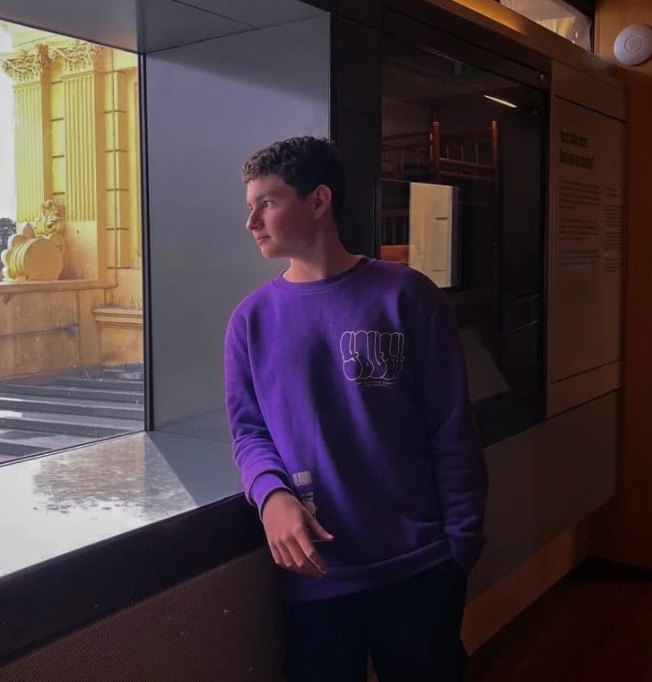
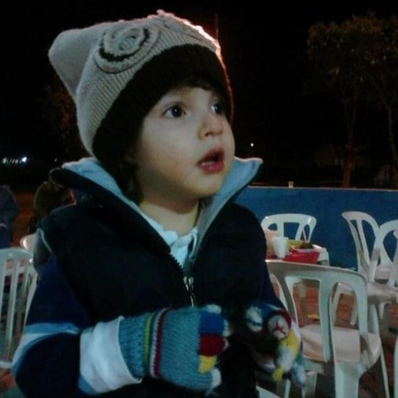

My name is Benjamin!
Im a JavaScript coder and a
HTML and CSS developer.
I do websites for all types of
projects, stores, restaurants or
companies
I am always looking for
innovation in each project
that i take on,
bringing creative,
functional and modern solutions.
My goal is to ensure
that every website is intuitive,
responsive and aesthetically
pleasing

I was born and live in Brazil
São Paulo region,
I was always enchanted
by the idea of
working on the computer,
when I was 12 years old,
I got my computer,
at first I just used it
to play video games.
And after all
I discovered programming and
web design
I became fascinated
and wanted to
learn more about it
and make a living from it
